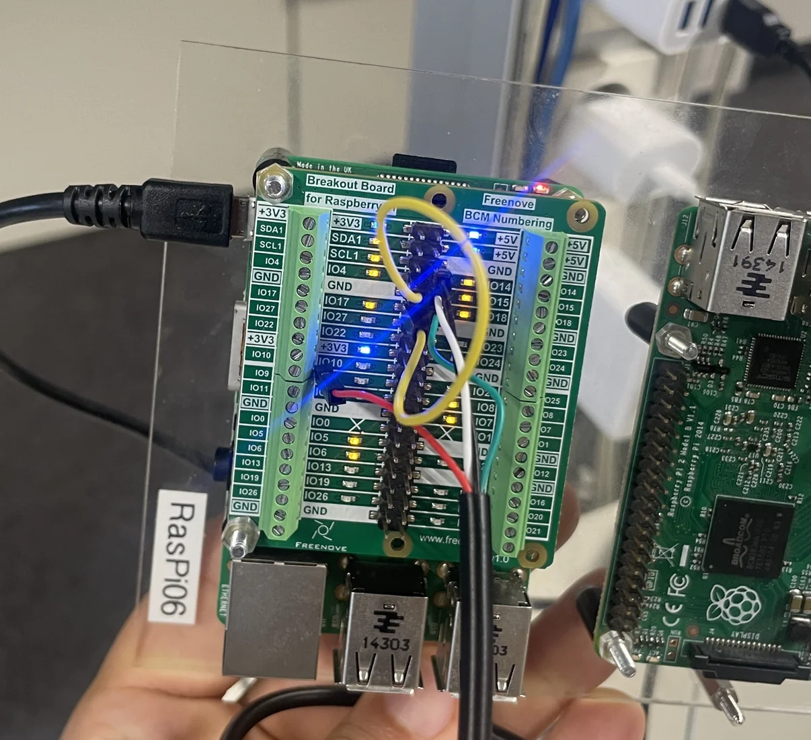

RTEMS real-time embedded control
Predictable software behaviour on real hardware.
 RTEMS / HARDWARE TESTED
RTEMS / HARDWARE TESTEDThe challenge
Real-time applications must respond to external events and coordinate concurrent tasks while limiting interference between shared resources and time-dependent operations.
The approach
Implemented GPIO behaviour in C with POSIX threads, interrupts, mutexes and semaphores. Separately studied RTEMS scheduling through QEMU, GDB and Capture Engine traces, including priority inversion and priority inheritance.
- Periodic GPIO switching with POSIX threading
- Interrupt-driven input and output handling
- Semaphores and mutexes for shared-state coordination
- Thread-state, sequence and scheduling Gantt diagrams
The outcome
Documented original on-device GPIO operation, terminal observations and scheduling analysis. Source was subsequently corrected for public presentation and has not been independently retested on hardware.
Hardware experiments + analysis of real-time scheduling.
From the project

The repository distinguishes the original hardware-tested submission from revised code, which has not been retested.